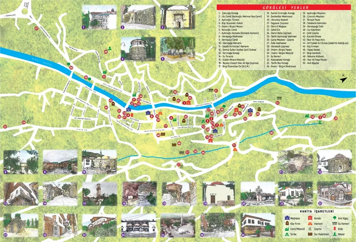
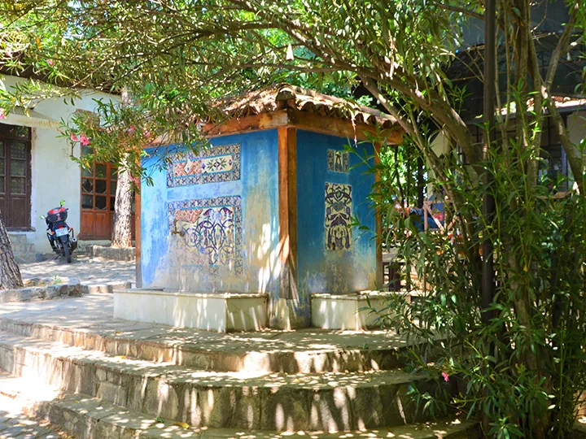

Aydınoğulları'nın başkenti, Bozdağ'ın eteğinde 700 yıllık bir Türk kenti
Taş duvarlı, kırmızı kiremitli, ahşap pencereli evleriyle Birgi, UNESCO Dünya Mirası Geçici Listesi'nde. Bu sitede yapılarını, tarihini ve kültürünü bulabilirsin.
Ne görmek istersin?
 Birgi TarihiAntik çağdan bugüne beş dönem
Birgi TarihiAntik çağdan bugüne beş dönem Tarihi Yerler38 yapı: konaklar, camiler, çeşmeler…
Tarihi Yerler38 yapı: konaklar, camiler, çeşmeler… İmam-ı BirgiviBirgi'de ders veren Osmanlı âlimi
İmam-ı BirgiviBirgi'de ders veren Osmanlı âlimi Birgi KültürüYemekler, örf ve âdetler, efsaneler
Birgi KültürüYemekler, örf ve âdetler, efsaneler Gezi RotalarıBademli, Bozdağ, Gölcük, Ödemiş
Gezi RotalarıBademli, Bozdağ, Gölcük, Ödemiş Foto SafariBirgi sokaklarından 18 kare
Foto SafariBirgi sokaklarından 18 kare
Harita ve UlaşımNasıl gidilir, nerede konaklanır HakkındaProje ve katkı sunanlar
HakkındaProje ve katkı sunanlar
Tarihi yerlerden
Çakırağa KonağıKonaklar Ulu CamiCamiler
Ulu CamiCamiler Ümmü Sultan TürbesiTürbeler
Ümmü Sultan TürbesiTürbeler
Çinili ÇeşmeÇeşmeler Dervişağa MedresesiMedreseler
Dervişağa MedresesiMedreseler Küp Uçuranlar KulesiDiğer Tarihi Yapılar
Küp Uçuranlar KulesiDiğer Tarihi Yapılar Evliya Çelebi EviDiğer Tarihi Yapılar
Evliya Çelebi EviDiğer Tarihi YapılarBirgi’yi izleyin
Video: MEDYAPOZ · 2 dakika. Oynat düğmesine dokununca yüklenir (yaklaşık 35 MB; mobil veride Wi-Fi önerilir).
Birgi rehberini telefonuna al
Android
Çok yakında Google Play’de. Uygulama şu an test aşamasında; yayımlanınca bağlantısı burada olacak.
iPhone
- Bu sayfayı Safari’de aç.
- Alttaki Paylaş düğmesine dokun.
- Ana Ekrana Ekle’yi seç, sonra Ekle’ye dokun.
Birgi simgesi ana ekranına gelir. İlk açılışta içerik indirilir; sonra internetsiz de gezebilirsin.
Bu site, Ödemiş BİLSEM öğrencilerinin projesinin çıktısıdır.